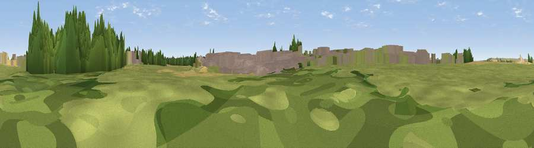

Copper Hill
#40539 in England · top 67% of its area beats it · near AncasterThe view, rendered

A 360° render of this exact spot computed from the terrain model, tree cover and land cover — summer colours, afternoon light, calibrated against photographs of famous viewpoints. Real trees, hedges and buildings will differ in detail.
The panorama
Grey silhouette: terrain skyline in each direction (720 bearings, Earth curvature and refraction included). Dashed green: skyline with trees (+15 m) and buildings (+8 m) as obstacles. Blue strip: how far the ground is visible on each bearing.
Where the view opens
Wedge length = distance to the farthest visible ground on that bearing (vegetation-aware). Rings at 10, 25 and 50 km.
What fills the view
49% grassland · 28% cropland · 12% built-up · 11% woodland
Angular shares of the visible panorama (visual magnitude), not map area. Landscape diversity 0.52 (0–1 Shannon).
Key numbers
More beautiful places nearby
The staircase of upgrades: each row has a higher view potential than everything closer. Driving times are estimates from straight-line distance, calibrated against real road routing — check an actual route before setting out.
| Place | Direction | Drive | Score |
|---|---|---|---|
| Viewpoint near Belton | SW · 4 km | ~8 min | 51.0 |
| Summerfield's Hill | WNW · 6 km | ~13 min | 51.5 |
| Viewpoint near Great Gonerby | WSW · 7 km | ~15 min | 52.5 |
| Viewpoint near Great Gonerby | WSW · 8 km | ~16 min | 62.0 |
| Viewpoint near Belvoir | WSW · 18 km | ~31 min | 70.8 |
| Broombriggs Hill | WSW · 54 km | ~76 min | 74.4 |
| Viewpoint near Woodhouse Eaves | WSW · 54 km | ~76 min | 77.7 |
| Viewpoint near Mow Cop | W · 113 km | ~137 min | 78.9 |
52.96692, -0.54586 · source: osm peak · position refined by local search. Computed location — check access rights before visiting.